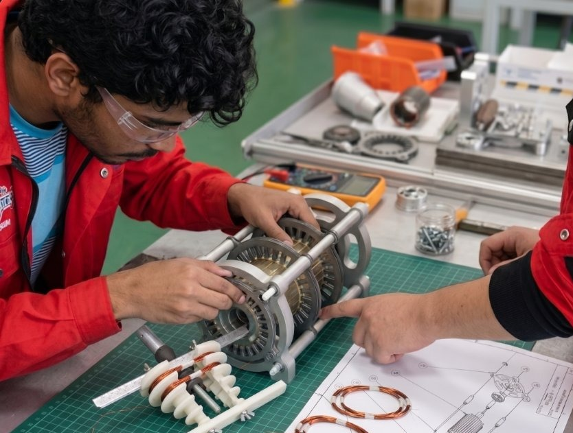

For TVET and universities
Induction Motor Trainer
Students stack, wind, assemble and run a real induction motor, then measure what they built.
- 1 · WatchMotors in one minute: the trainer Shorts
- 2 · PractiseSlip Lab, Motor Explorer, Force, the motor viewer
- 3 · Learn in depthFive modules with the kit, and train-the-trainer
- 4 · Work with usRoll-out at your institution